Activity: Apply a user defined constraint
The User-Defined constraint command provides a flexible definition of degrees of freedom using any rectangular coordinate system in your document. Depending on the mesh type, you can apply a user-defined constraint to a face, face set, feature, edge, point, node or curve.
-
For solid parts with tetrahedral meshes, you use this interactive triad to restrict movement in any combination of the three translational degrees of freedom (DOF).
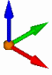
-
For thin-body parts with surface meshes, you can restrict movement in any combination of the six DOF: three translational and three rotational.
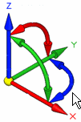
-
Open the file FE_user-defined.par.
Simulation models are delivered in the \Program Files\Siemens\Solid Edge 2023\Training\Simulation folder.
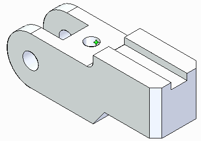
Apply a user-defined constraint.
-
Select Simulation tab→Constraints group→User-Defined Constraint.
-
Select the three planar faces on top of the part as shown.
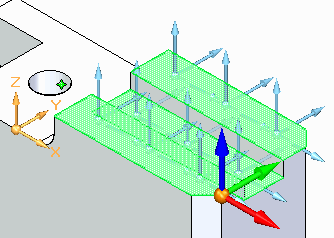
-
Select the blue Z-direction arrow of the triad to restrict movement in the Z direction.
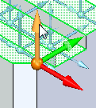
-
Select the green Y-direction arrow of the triad to restrict movement in the Y direction.
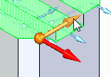
-
Right-click to accept, and then click in space to finish.
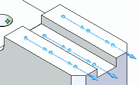
On the Constraints command bar, you can select the Show Label icon

to see the degrees of freedom. In this model, the label shows: FREE DOF: 1.
Refer to Constraint labels for more information.
Apply a fixed constraint.
-
Select Simulation tab→Constraints group→Fixed.
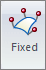
-
Select the cylindrical face of the center hole.
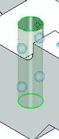
-
Right-click to accept, and then click in space to finish.
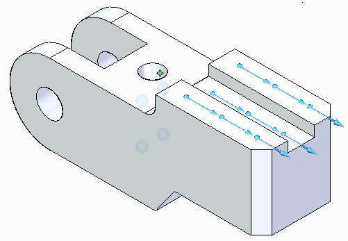
Place a force load.
-
Select Simulation tab→Structural Loads group→Force.
-
Select the back face.
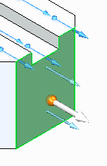
-
On the command bar, click Flip
 .
.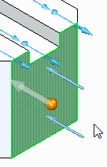
-
Type 200 N in the load Value box and press Enter.
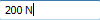
-
Click to finish.
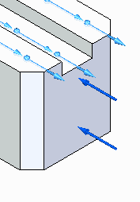
Mesh and solve the model.
-
Select Simulation tab→Mesh group→Mesh. In the Mesh dialog box, click Mesh.
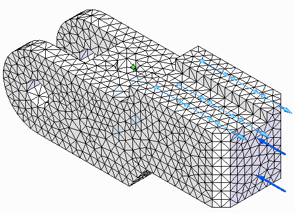
-
Select Simulation tab→Solve group→Solve.
After a brief time, processing finishes and results for stress are displayed in megapascals (MegaPa).
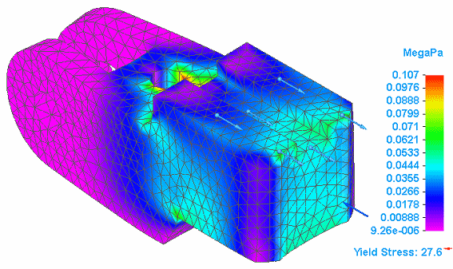
-
Close this file.
How do I
Define a constraintActivity: Apply a fixed constraint
Activity: Apply pinned and no rotation constraints
Activity: Apply a sliding along surface constraint
Edit a constraint
Learn more
Creating and using constraintsConstraints
Constraint symbols
Constraint labels